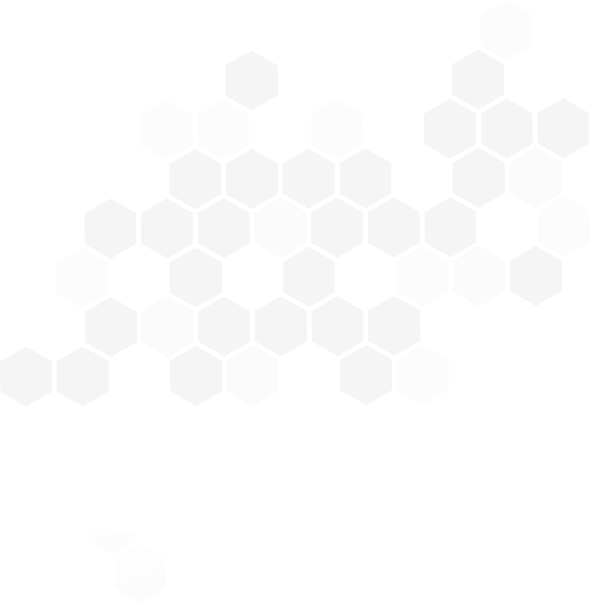
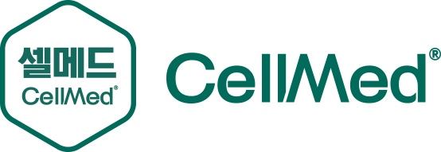
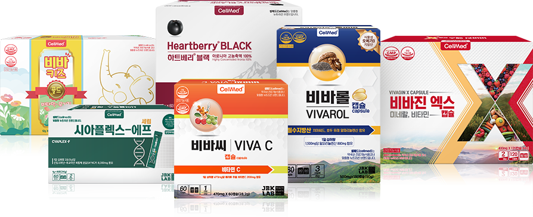

셀메드는 만성질환의 효율적인 관리를 위해 약사가 직접 처방하는 활성형 식물영양소 브랜드입니다.

셀메드의 전제품은
활성과 안정성을 증가시킨
활성형 식물영양소를 주원료로 만들어집니다.
기존의 건강기능식품이 단순히 건강에 도움을 주는 것에 비해 셀메드는 약리적 효과와 안전성이 검증된 식물 영양소만을 선택하여 만든 새로운 제품입니다.
그래서 셀메드는 기존건강기능식품이 가진 품질과 한계를 뛰어넘기 위해 오랜 기간 개발하고
축적한 혁신적인 활성형 기술을 바탕으로 획기적인 제품을 생산해낼 수 있었습니다.
세계 최초로 개발된 활성형 뉴트라슈티칼인 시아니딘 – 폴리사카라이드 나노복합체 (시아플렉스)와 활성형 노유파 오메가 (유파플렉스)는 셀메드의 핵심제품으로 HACCP 시설과 GMP시설에서 압도적인 효능과 탁월한 안전성을 자랑하는 세계 최고의 뉴트라슈티칼로 평가받고 있습니다.